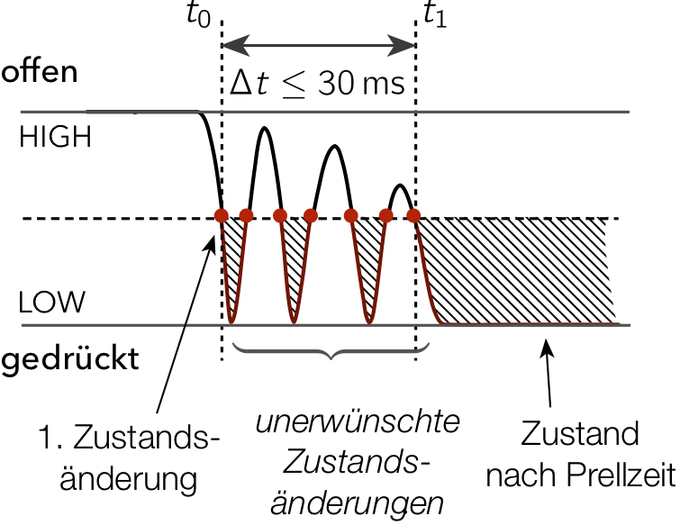

Entprellen eine Tasters
Wird ein einfacher Taster als Umschalter, zum Beispiel zum An- und Ausschalten einer LED verwendet, kann es passieren, dass beim einmaligen Betätigen scheinbar zufällig manchmal geschaltet und manchmal nicht geschaltet wird.
Die Ursache für dieses scheinbar willkürliche Verhalten wird als Prellen (engl. bouncing) bezeichnet. Beim Drücken des Tasters ändert sich der Zustand am Eingangspin nicht nur einmal, sondern gelegentlich auch öfter. Ähnlich wie ein Lineal, welches auf einen Tisch geschlagen wird, springen die Kontakte eines Tasters beim Betätigen für einen kurzen Moment hin und her. Dies führt zu ungewollten, sich schnell ändernden Spannungszuständen am Eingangspin. Werden diese schnellen Zustandsänderungen verarbeitet, so scheint es, dass beim Betätigen des Tasters nichts passiert, obwohl in Wahrheit vielleicht angeschaltet und gleich danach wieder ausgeschaltet wurde.
Mit einem geeigneten Code können Taster entprellt werden, damit sie beim Betätigen auch wirklich nur einmal schalten.
Prellen eines Tasters

In der oben stehenden Abbildung ist schematisch der Verlauf der Spannung bei einem LOW-aktiven Taster (Signalpegel LOW beim Drücken) dargestellt. Wird der Taster gedrückt, so fällt die Spannung am Eingangspin zuerst auf 0 V ab, springt jedoch gleich darauf wieder auf einen höheren Spannungswert. Würde jeder Zustandswechsel von HIGH auf LOW zum Umschalten der LED führen, so wäre bei einem prellenden Schalter nicht vorhersehbar, ob die LED zum Schluss an- oder ausgeschaltet ist.
Entprellen (debouncing)
Ein Taster ist entprellt, wenn die schnellen ungewollten Zustandsänderungen während des Drückens eines Tasters ignoriert wurden. Wird also am Tasterpin eine erste Zustandsänderung detektiert, müssen für eine vorgegebene Zeit (Prellzeit) alle folgenden unerwünschten Zustandsänderungen ignoriert werden. Da die meisten Taster nur in einem Zeitbereich \(\Delta t\) von ca. 30 ms prellen, sollte ein Prellzeit von 30 ms ausreichen.
Anschließend muss der Zustand des Tasters erneut eingelesen werden. Entspricht der Zustand dem nach der ersten Zustandänderung (im Beispiel also LOW), dann wurde der Taster erfolgreich entprellt.
Was würde passieren, wenn die Prellzeit, also jene Zeit, in welcher aller unerwünschten Zustandsänderungen ignoriert werden, eine Sekunde beträgt?
Einfaches (blockierendes) Entprellen
Die einfachste, wenn auch nicht beste Lösung, um einen Taster zu entprellen, kann durch eine einfache blockierende Programmverzögerung mit der delay()-Funktion realisiert werden.
Im folgenden Beispiel wird die fallende Flanke des Tasterpins, als der Übergang von ungedrückt HIGH zu gedrückt LOW entprellt und zum Umschalten einer LED verwendet.
/* Ein sehr einfaches Beispiel zum Entprellen eines Tasters und Umschalten einer LED
Dieses Beispiel blockiert den MC während des Entprellens. Eine bessere Lösung lässt
sich mit der millis()-Funktion realisieren */
#define BUTTON 12 // an Schaltung anpassen
#define LED 3 // an Schaltung anpassen
int stateButton = HIGH; // aktueller Status des Taster-PINs
int stateButtonLast = HIGH; // Status des Taster-PINs vor der letzten Überprüfung
int stateLED = LOW; // Status der LED (an oder aus)
void umschaltenLED(int pPin){
stateLED = !stateLED; // LED-Status umschalten
digitalWrite(pPin, stateLED); // LED-Status aktualisieren
}
void setup() {
pinMode(BUTTON, INPUT_PULLUP); // Tasterpin mit Pull-Up-Widerstand konfigurieren
pinMode(LED, OUTPUT);
}
void loop() {
stateButton = digitalRead(BUTTON); // aktuellen Zustand des Tasters bestimmen
// Ist Taster gedrückt ( stateButton == 0 ) UND war er vorher nicht gedrückt (stateButtonLast == 1)
if ((stateButton == 0) && (stateButtonLast == 1))
{
delay(30); // 30 ms warten, um falsche Zustandsänderungen zu ignorieren
stateButton = digitalRead(BUTTON); // Zustand des Taster überprüfen
if (stateButton == 0) { // Ist der Taster immer noch gedrückt?
umschaltenLED(LED);
}
}
stateButtonLast = stateButton; // alten Wert des Tasters speichern
}
Hinweis: Das Zeichen
!ist das Negationszeichen und bedeutet nicht. Der AusdruckstateLED = !stateLED;negiert als den Wert vonstateLED(aus0wird1und aus1wird0).
Pseudocode (nicht blockierend mit millis())
Der Nachteil des obigen Codes zum Entprellen ist, dass der Programmablauf durch die delay() Funktion blockiert wird. Ein nichtblockierendes Entprellen lässt sich mit der millis() Funktion realisieren.
Der folgende unvollständige Programmcode zum Entprellen eines Tasters mit der millis()-Funktion zeigt beispielhaft, wie das Drücken eines Tasters (nicht das Loslassen) entprellt werden kann.
/* Unvollständiger Code zum Entprellen eines Tasters und umschalten einer LED*/
#define BUTTON 0 // an Schaltung anpassen
#define LED 13 // an Schaltung anpassen
bool entprellen = false;
int stateButton = HIGH; // aktueller Status des Tasters
int stateButtonLast = HIGH; // letzter Status des Tasters
int stateLED = LOW; // Status der LED (an oder aus)
unsigned long entprellZeit = 30; // in ms
unsigned long zeitTaster = 0;
void setup() {
Serial.begin(115200);
pinMode(BUTTON, INPUT_PULLUP); // interner Pull-Up-Widerstand
pinMode(LED, OUTPUT);
}
void loop() {
stateButton = digitalRead(BUTTON); // Taster-Pin einlesen
// Wurde der Taster gedrückt?
if ((stateButton == 0) && (stateButtonLast == 1)) {
// Zeitstempel zum Entprellen zurücksetzen und merken, dass
// beim nächsten Durchlauf enprellt werden muss:
zeitTaster = millis();
entprellen = true;
}
// Die Zustandsänderung wurde bereits erkannt, jetzt wird entprellt:
if (entprellen)
{
/* PSEUDOCODE zum Entprellen
--------------------------------------------------------
WENN (Zeit seit letzter Änderung am Pin > entprellZeit)
{
WENN (Taster immer noch gedrückt)
{
- stateLED umschalten
- entprellen beenden
}
}
--------------------------------------------------------
*/
}
stateButtonLast = stateButton; // alten Tasterzustand speichern
digitalWrite(LED, stateLED); // LED-Status aktualisieren
}
Aufgaben
- Erläutern Sie, warum nach der Prellzeit der Zustand des Tasters überprüft werden muss.
- Vervollständigen Sie den nicht blockierenden Code zum Entprellen eines Tasters. Beim Betätigen des Tasters soll eine angeschlossene LED an- bzw. ausgeschaltet werden (toggeln).
- Bauen Sie eine Schaltung mit 4 gleichfarbigen LEDs und einem Taster auf. Zu Beginn leuchtet nur die erste LED. Beim ersten Betätigen des Taster soll die zweite LED aufleuchten und alle anderen LEDs aus sein. Wird der Taster ein weiteres Mal betätigt, so soll die 3. LED aufleuchten, danach die 4. LED und so weiter. Verwenden Sie einen geeigneten Automaten.
- Bauen Sie eine Schaltung mit zwei LEDs und zwei Tastern auf. Schreiben Sie ein Programm, das jede LED mit einem einzelnen Taster an und ausschalten lässt (Taster 1 schaltet nur LED 1 und Taster 2 schaltet nur LED 2). Achten Sie darauf die Taster zu entprellen.
Bounce2-Bibliothek zum Entprellen
Mit der Arduino-Bibliothek bounce2 kann das Entprellen stark vereinfacht werden. Die Dokumentation findet sich hier.
// This example toggles the debug LED (pin 13) on or off
// when a button on pin 2 is pressed.
// Include the Bounce2 library found here :
// https://github.com/thomasfredericks/Bounce2
#include <Bounce2.h>
#define BUTTON_PIN 2
#define LED_PIN 13
int ledState = LOW;
Bounce debouncer = Bounce(); // Instantiate a Bounce object
void setup() {
debouncer.attach(BUTTON_PIN,INPUT_PULLUP); // Attach the debouncer to a pin with INPUT_PULLUP mode
debouncer.interval(25); // Use a debounce interval of 25 milliseconds
pinMode(LED_PIN,OUTPUT); // Setup the LED
digitalWrite(LED_PIN,ledState);
}
void loop() {
debouncer.update(); // Update the Bounce instance
if ( debouncer.fell() ) { // Call code if button transitions from HIGH to LOW
ledState = !ledState; // Toggle LED state
digitalWrite(LED_PIN,ledState); // Apply new LED state
}
}
Links
- Using digital inputs: Switch bounce and solutions to it
- Arduino Library Bounce2
- Die Button2-Bibliothek ist deutlich umfangreicher als die Bounce2 Bibliothek und ermöglicht das Arbeit mit Eventhandlern für verschiedene Taster-Events wie Click, LongClick, DoubleClick, TripleClick.